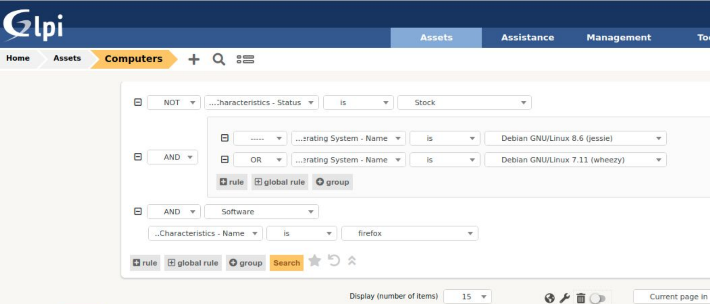
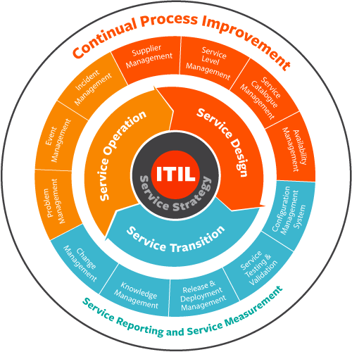

Gestion du Patrimoine

Définition
La gestion du patrimoine c'est la gestion des ressources informatiques (matérielles, logicielles et humaines) sur un plan comptable (amortissement) et des maintenances, sous garantie ou hors garantie. C'est également l'attibution du matériel et de logiciels (licences d'utilisation) à certaines catégories de personnel ou d'emploi, etc...
Présentation de l'entreprise
EXÆGIS est l’agence de notation référente du secteur numérique. Elle délivre également un label pour apporter la confiance nécessaire au financement et à l’investissement des entreprises du Numérique.
Garante des sociétés offrant des contrats pluriannuels « as a service », sous forme d'abonnement ou de type redevances. Elle apporte sa garantie aux bailleurs, qui peuvent ainsi financer ces contrats, et clients finaux qui souhaitent sécuriser l’exécution de leurs contrats. Elle accompagne ainsi le développement des éditeurs.
Exægis s’adresse à tous ceux qui font du Numérique (Start Up, SSII et ESN), du financent (Investisseurs, Fonds d'investissement et Loueurs) et l’utilisent (Client finals, Grands Comptes et PME).
Gestion d'incidents
Les incidents sont gérés grâce au système d'issues sur GitLab. GitLab est un outil de gestion de versions. Ce n'est donc pas sa fonction première mais son système d'issues permet de lier les incidents directement au repository concerné. On peut donner un label à chaque issues, mettre des commentaires, assigner une issue à une personne et voir qui a participé à la résolvation de l'issue (commentaires, commits liés, etc...)
| Avantages |
Inconvénients |
- Permet de garder un historique et une traçabilité des incidents
- Permet de lier les incidents directement aux préojets concernés
|
- Pas de lien avec la gestion du parc mise en place sous GLPI
- Ne permet de lien entre les incidents et les matériels signalés (si l'incident concerne un matériel et non une application)
|

Logiciel utiliser pour le recensement du matériel
Le logiciel GLPI, associé à FusionInventory a récemment été mis en place afin de gérer le parc des postes de travail et des serveurs physiques. Il permet grâce au client Fusioninventory, qui doit être installé sur chaque poste, de recenser et de lister tous le matériel utilisé.
| Avantages |
Inconvénients |
- Solution open source et très répandue
- Facile à mettre en place
|
- L'installation encore récente de l'outil nécessite des travaux d'intégration avec les autres outils.
- Il faut installer FusionInventory sur chaque poste que l'on veut recenser (autrement dit tous les postes).
|

Normes et méthodes de l'entreprise
L’entreprise n’applique pas de référentiel directement mais s’inspire de bonnes pratiques de référentiels.
Pour les développements, la gestion de projet s’appuie sur des pratiques issues de méthodologies agiles, tel que Scrum. Il n’y a pas de règles de codage explicites, mais les équipes mettent en place les standards utilisés par les diverses communautés open source selon la nature des écosystèmes employés.
Pour la gestion de la production informatique, le référentiel est ITIL, notamment pour les aspects gestion des incidents et changements. Il existe des règles de nommage des machines qui respectent une norme interne.

Les frameworks utilisée par l’entreprise sont Spring boot pour le langage Java, laravel pour le langage PHP et Materialize comme Framework CSS.
L’IDE que l’entreprise utilise est NetBeans dans sa version 8.2 qui est pour eux la plus complète.
La version Java qu’ils utilise le plus est Java 8 qui est la version qu’utilise NetBeans 8.2
Migration des postes et des serveurs
Une sauvegarde complète du système (clone) est faite et un premier test de migration est effectué sur ce clone.
Si l’opération réussie , la procédure de migration sera appliquée dans les conditions opérationnelles.
Dans le cas où le clonage n’est pas possible, une sauvegarde des données est effectuée sur un disque externe ou une clé USB.
Mises à jour des logiciels
Les mises à jour s’effectuent une à deux fois par an selon les technologies.
Pour les systèmes d’exploitation, le cycle de vie est de plusieurs années avec une application plus régulières des mises à jour, généralement de manière automatique opérées directement par le système.
Déploiement des postes
Il n’y a pas d’outil de déploiement automatique sur les postes, les installations s’effectuent manuellement par le personnel informatique en fonction des besoins et des demandes.
Suivi de version des outils
Le suivi des versions est mis en œuvre de manière précise et régulière sur les applications développées en interne en utilisant les fonctionnalités d’outil tel que Gitlab.
Pour ce qui est des autres outils, les mises à jour s’appuient généralement sur les mises à jours automatique qu’utilisent par défaut ces outils.
Lorsque de tels principes ne sont pas possibles, les mises à jour sont ainsi gérées et appliquées manuellement.
Formation du personnelle
Il n’y a pas de plan de formations préétabli.
Elles ont lieu selon les besoins et sont de toutes façons prévues lors des phases de démarrage sur l’emploi de nouveaux outils.
Exemple : Exaegis vient de passer à G Suite? Ses employés doivent donc être formé pour utiliser cet outil.
Gestion de la veille technologique de l’entreprise
La veille technologique est assurée par les personnes qui composent les équipes.
Le partage des informations s’effectue de manière informelle et influence globalement les orientations et les choix qui peuvent être pris.
Il arrive parfois que du temps soit alloué pour tester une technologie et déterminer plus concrètement de sa pertinence.